Serverless Architecture
Introduction
Serverless computing represents a fundamental shift in how we think about infrastructure. The name is misleading — servers still exist, but you never see them, manage them, patch them, or scale them. You write functions or configure services, and the cloud provider handles everything else: provisioning, scaling, high availability, and capacity planning. You pay only for what you use, down to the millisecond.
But serverless is not a silver bullet. It introduces new constraints: cold starts, execution time limits, vendor lock-in, and debugging complexity. Understanding when serverless is the right choice — and when it is not — requires grasping how it works under the hood. This document covers serverless architecture from Lambda internals through event-driven patterns, orchestration, and cost modeling.
What Serverless Really Means
Serverless has three defining characteristics:
-
No server management: You do not provision, patch, or scale servers. The provider handles infrastructure entirely.
-
Pay-per-invocation: You are charged only when your code runs. Zero requests means zero cost. This is fundamentally different from paying for an EC2 instance 24/7 whether it receives traffic or not.
-
Auto-scaling to zero: When there is no demand, serverless resources scale down completely. When demand spikes, they scale up automatically (to account limits).
The Serverless Spectrum
Not all serverless services are equal in how fully they embody these principles:
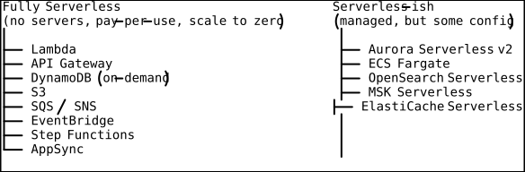
AWS Lambda Internals
Execution Environment
When Lambda receives an invocation, it creates (or reuses) an execution environment — a lightweight, isolated container that runs your function code.
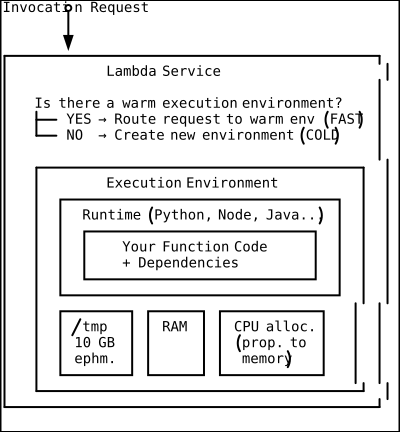
The Cold Start Problem
A cold start occurs when Lambda creates a new execution environment. This involves:
- Downloading your code (from S3 or ECR for container images)
- Initializing the runtime (starting the Python/Node/Java interpreter)
- Running your initialization code (outside the handler: imports, DB connections)
- Executing the handler (your actual function logic)
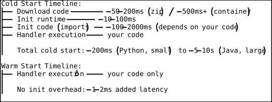
Strategies to Minimize Cold Starts
1. Provisioned Concurrency: Keep a specified number of environments warm at all times. You pay for the warm environments even when idle, but there are no cold starts for those instances.
# Set provisioned concurrency
aws lambda put-provisioned-concurrency-config \
--function-name my-api-handler \
--qualifier prod \
--provisioned-concurrent-executions 502. Minimize deployment package size: Smaller packages download faster. Use Lambda Layers for shared dependencies. Tree-shake unused code.
3. Choose efficient runtimes: Python and Node.js have the fastest cold starts (~200ms). Java and .NET have the slowest (~2-5s) but can be improved with GraalVM native-image or .NET AOT compilation.
4. Keep initialization outside the handler: Database connections, SDK clients, and configuration loaded during init persist across warm invocations.
import boto3
import os
# INIT PHASE: runs once per cold start, persists across warm invocations
dynamodb = boto3.resource('dynamodb')
table = dynamodb.Table(os.environ['TABLE_NAME'])
def handler(event, context):
# HANDLER PHASE: runs on every invocation
# 'table' is already initialized from the init phase
response = table.get_item(Key={'id': event['id']})
return {
'statusCode': 200,
'body': response['Item']
}Lambda Layers
Layers let you package shared code and dependencies separately from your function code. A function can use up to 5 layers. The total unzipped size (function + layers) must be under 250 MB.
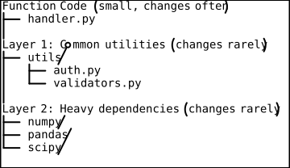
Lambda Container Image Support
Instead of zip packages, you can deploy Lambda functions as container images up to 10 GB. This is useful for ML inference, where model files can be large.
FROM public.ecr.aws/lambda/python:3.12
COPY requirements.txt .
RUN pip install -r requirements.txt
COPY model/ /opt/model/
COPY app.py .
CMD ["app.handler"]Event Sources
Lambda is event-driven. It responds to events from dozens of AWS services:
Synchronous Invocation
The caller waits for Lambda to complete and return a response.
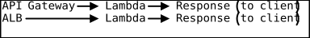
Asynchronous Invocation
The event is queued. Lambda processes it and retries on failure (up to 2 retries). You can configure a dead-letter queue (SQS/SNS) for failed events.
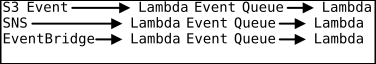
Poll-Based (Stream/Queue)
Lambda polls the source for new records, processes them in batches.
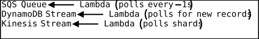
Event Source Architecture
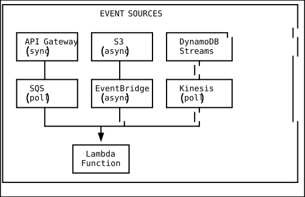
API Gateway
REST API vs HTTP API
| Feature | REST API | HTTP API |
|---|---|---|
| Price (per million) | $3.50 | $1.00 |
| Latency | Higher | ~60% lower |
| Caching | Built-in | No |
| WAF integration | Yes | No |
| Usage plans/API keys | Yes | No |
| Request validation | Yes | No |
| OpenAPI import/export | Yes | Yes |
| JWT authorizer | Custom Lambda | Built-in |
| WebSocket | Yes | No |
Default choice: HTTP API (cheaper, faster). Use REST API when you need caching, WAF, request validation, or usage plans.
Step Functions for Orchestration
What Are Step Functions?
Step Functions let you coordinate multiple Lambda functions (and other AWS services) into serverless workflows using a visual state machine. Instead of writing orchestration logic in code (error handling, retries, parallel execution, branching), you define it declaratively.
Workflow Example: Order Processing
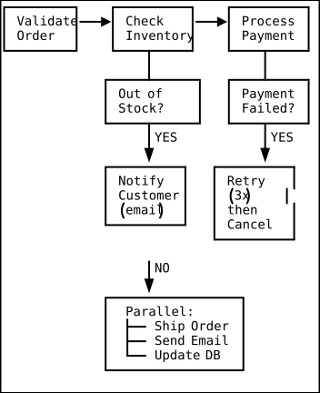
{
"Comment": "Order Processing Workflow",
"StartAt": "ValidateOrder",
"States": {
"ValidateOrder": {
"Type": "Task",
"Resource": "arn:aws:lambda:us-east-1:123456789012:function:validate-order",
"Next": "CheckInventory",
"Retry": [{"ErrorEquals": ["States.TaskFailed"], "MaxAttempts": 2}]
},
"CheckInventory": {
"Type": "Task",
"Resource": "arn:aws:lambda:us-east-1:123456789012:function:check-inventory",
"Next": "InStock?"
},
"InStock?": {
"Type": "Choice",
"Choices": [
{"Variable": "$.inStock", "BooleanEquals": true, "Next": "ProcessPayment"}
],
"Default": "NotifyOutOfStock"
},
"ProcessPayment": {
"Type": "Task",
"Resource": "arn:aws:lambda:us-east-1:123456789012:function:process-payment",
"Next": "FulfillOrder"
},
"FulfillOrder": {
"Type": "Parallel",
"Branches": [
{"StartAt": "ShipOrder", "States": {"ShipOrder": {"Type": "Task", "Resource": "...", "End": true}}},
{"StartAt": "SendConfirmation", "States": {"SendConfirmation": {"Type": "Task", "Resource": "...", "End": true}}}
],
"End": true
},
"NotifyOutOfStock": {
"Type": "Task",
"Resource": "arn:aws:lambda:us-east-1:123456789012:function:notify-customer",
"End": true
}
}
}Express vs Standard Workflows
| Feature | Standard | Express |
|---|---|---|
| Duration | Up to 1 year | Up to 5 minutes |
| Execution model | Exactly-once | At-least-once |
| Price | Per state transition | Per execution + duration |
| Audit history | Full execution history | CloudWatch Logs only |
| Use case | Long-running workflows | High-volume, short flows |
Serverless Patterns
Pattern 1: API Backend
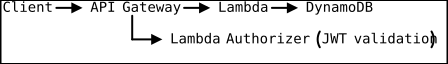
Pattern 2: Event Processing Pipeline
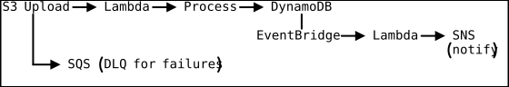
Pattern 3: Scheduled Jobs
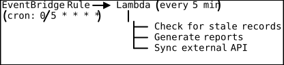
Pattern 4: Fan-Out / Fan-In
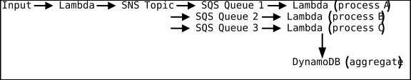
Pattern 5: Saga Pattern for Distributed Transactions
When a workflow spans multiple services and any step can fail, the saga pattern provides compensating transactions:
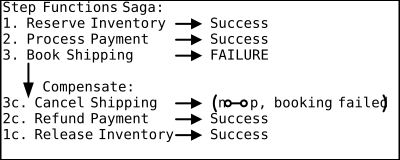
Lambda@Edge and CloudFront Functions
Lambda@Edge
Run Lambda functions at CloudFront edge locations. Four trigger points:
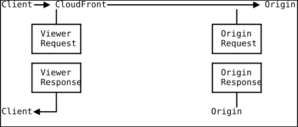
Use cases:
- URL rewriting (A/B testing, feature flags)
- Authentication at the edge
- Dynamic content generation (SSR)
- Header manipulation (security headers, CORS)
- Geographic content customization
CloudFront Functions
Even lighter than Lambda@Edge: run JavaScript functions in under 1 ms at every CloudFront edge location. Limited to viewer request/response events.
Use cases: URL redirects, header manipulation, cache key normalization, simple A/B testing.
Limitations and Anti-Patterns
Lambda Limits
| Limit | Value |
|---|---|
| Max execution time | 15 minutes |
| Memory | 128 MB - 10,240 MB |
| Deployment package (zip) | 50 MB (250 MB unzipped) |
| Container image | 10 GB |
| /tmp storage | 512 MB - 10 GB |
| Concurrent executions | 1,000 (default, can increase) |
| Payload (sync invocation) | 6 MB |
| Payload (async invocation) | 256 KB |
| Environment variables | 4 KB total |
Anti-Patterns
1. Long-running processes: If your function regularly hits the 15-minute limit, use ECS Fargate or Step Functions to orchestrate shorter Lambda functions.
2. Monolithic Lambda: A single 200 MB Lambda that handles all API routes. Break it into focused, single-purpose functions.
3. Synchronous chains: Lambda A calls Lambda B calls Lambda C synchronously. If B is slow, A times out. Use SQS/SNS/Step Functions for decoupling.
4. Relational databases without connection pooling: Each Lambda invocation opens a new database connection. At 1,000 concurrent invocations, you have 1,000 database connections. Use RDS Proxy to pool connections.
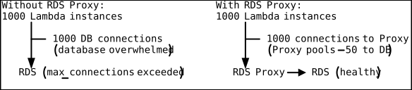
Cost Modeling
When Serverless Is Cheaper
Lambda pricing: 0.0000166667 per GB-second.
For a function with 256 MB memory running for 200ms:
- Cost per invocation: 0.0000002 (request) = ~$0.000001
- 1 million invocations/month: ~$1.05
The same workload on a t3.micro EC2 instance (always-on): ~$7.60/month.
Lambda wins when:
- Traffic is spiky or unpredictable
- Average utilization of an equivalent server would be < 15-20%
- The workload naturally decomposes into short-lived functions
- You value zero operational overhead
EC2/Fargate wins when:
- Traffic is steady and predictable
- Functions run for several minutes
- High and consistent request volume (millions per hour)
- You need long-running processes, WebSockets, or specialized runtimes
Cost Comparison Table
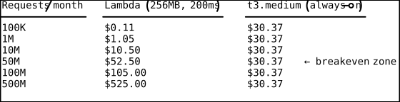
At ~30-50 million requests per month with steady traffic, EC2 becomes cheaper. But this ignores operational cost: patching, monitoring, scaling, availability engineering. For many teams, the operational simplicity of Lambda justifies a higher compute cost.
Serverless Web Application Architecture
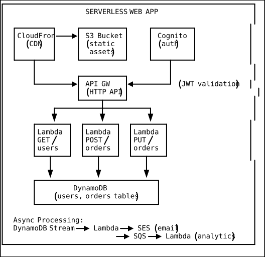
Practical Takeaways
-
Start serverless for new projects. It is faster to build, cheaper to run at low scale, and eliminates operational overhead. Migrate to containers only when you hit actual limitations.
-
Design for cold starts. Keep packages small, use efficient runtimes, initialize connections outside the handler. Use provisioned concurrency for latency-sensitive paths.
-
Use SQS between components, not synchronous Lambda-to-Lambda calls. SQS provides buffering, retry, and dead-letter queues.
-
Use RDS Proxy if you must connect Lambda to a relational database. Without it, connection exhaustion is inevitable at scale.
-
Prefer Step Functions over orchestration-in-code. They provide built-in retry, error handling, parallel execution, and visual debugging.
-
Set concurrency limits per function to prevent a traffic spike in one function from consuming your account’s entire concurrency pool.
-
Use EventBridge as your default event bus. It supports content-based filtering, schema discovery, archive and replay, and integrates with 100+ AWS services.
-
Monitor with X-Ray. Distributed tracing across API Gateway, Lambda, DynamoDB, and other services is essential for debugging serverless architectures.
DSA Connections
Event Queues (FIFO Queues) — SQS as a Bounded Buffer Between Lambda Functions
A queue is a first-in-first-out (FIFO) data structure that decouples producers from consumers, enabling asynchronous processing. SQS is a distributed implementation of the classic bounded-buffer (producer-consumer) pattern from concurrent programming: one Lambda function produces messages, SQS buffers them, and another Lambda function consumes them. The bounded-buffer problem requires synchronization to prevent producers from overwhelming consumers — SQS handles this with visibility timeouts (a consumed message is hidden until acknowledged or the timeout expires, preventing double-processing) and dead-letter queues (messages that fail N times are moved aside, preventing poison-pill messages from blocking the queue). When Lambda polls SQS, it operates as a consumer thread pool that scales up to match the queue depth, processing up to 10 messages per batch. This pattern is why the document recommends SQS between components rather than synchronous Lambda-to-Lambda calls: the queue absorbs traffic spikes, provides backpressure, and guarantees at-least-once delivery — all properties of a well-implemented bounded buffer.
Topological Sort — Step Functions Workflow Execution Order
Topological sort orders the nodes of a directed acyclic graph (DAG) so that for every directed edge from node A to node B, A appears before B in the ordering. Step Functions workflows are DAGs: each state (Task, Choice, Parallel) is a node, and transitions are directed edges. When the Step Functions engine executes a workflow, it performs a topological sort to determine the valid execution order, ensuring that no state runs before its dependencies have completed. The Parallel state type introduces concurrent branches that are independent subgraphs within the DAG, each of which can be topologically sorted independently. The Saga pattern for distributed transactions (ValidateOrder → CheckInventory → ProcessPayment → FulfillOrder, with compensating rollbacks) is a linear topological order with reverse-order compensation edges. If you model the order processing workflow from the document as a graph, the Step Functions engine ensures that ProcessPayment never executes before CheckInventory completes, exactly as topological sort guarantees.
Producer-Consumer Pattern — Asynchronous Lambda Invocation and Fan-Out/Fan-In
The producer-consumer pattern uses a shared buffer to decouple the rate at which work is produced from the rate at which it is consumed, allowing independent scaling of each side. The serverless fan-out/fan-in pattern in the document (SNS Topic → multiple SQS Queues → multiple Lambda consumers → DynamoDB aggregation) is a multi-consumer variant: one producer publishes to an SNS topic, which fans out to N SQS queues (each a separate bounded buffer), each consumed by independent Lambda functions. The fan-in step, where results aggregate into DynamoDB, acts as a barrier synchronization point. This maps directly to the MapReduce paradigm: SNS fan-out is the “map” phase distributing work, individual Lambda consumers process their partition, and DynamoDB aggregation is the “reduce” phase. The practical benefit is that each consumer scales independently based on its queue depth, and a slow consumer does not block fast ones — achieving the same decoupling that the bounded-buffer pattern provides in concurrent programming.
Hash Maps — Lambda Execution Environment Warm Pool Management
A hash map provides O(1) average-case lookups by key, making it the ideal structure for routing requests to pre-existing resources. The Lambda service internally maintains a mapping from (function ARN + configuration hash) to available warm execution environments. When an invocation arrives, the Lambda control plane hashes the function identifier and checks whether a warm environment exists — a cache hit means a warm start (sub-millisecond overhead), while a cache miss triggers a cold start (environment creation). Provisioned concurrency pre-populates this map with a guaranteed number of warm entries, eliminating cold starts for those slots. The strategy of initializing database connections and SDK clients outside the handler exploits the fact that warm environments persist in this pool: once an environment is created and its init phase completes, subsequent invocations that hash to the same environment reuse the already-initialized connections, exactly as a cache hit returns a precomputed value without re-deriving it.